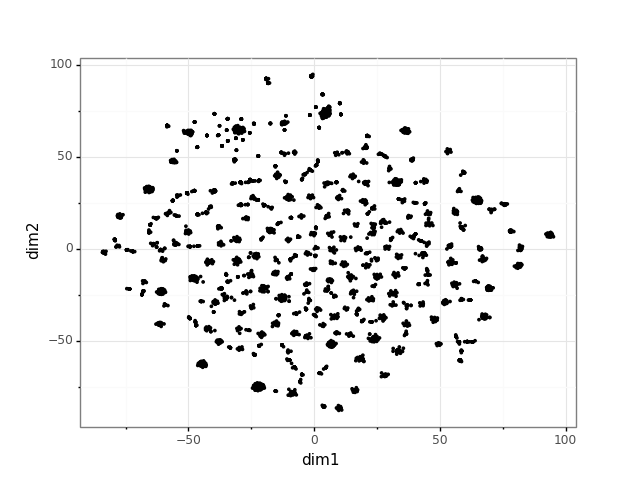

Learning - Node embeddings
Node embeddings are real-valued representations of nodes that capture the node’s neighborhood (and beyond).
1 from py3plex.core import multinet
2 from py3plex.wrappers import train_node2vec_embedding
3 from py3plex.visualization.embedding_visualization import embedding_visualization
4 from py3plex.visualization.embedding_visualization import embedding_tools
5 import json
6
7 ## load network in GML
8 multilayer_network = multinet.multi_layer_network().load_network("../datasets/imdb_gml.gml",directed=True,input_type="gml")
9
10 # save this network as edgelist for node2vec
11 multilayer_network.save_network("../datasets/test.edgelist")
12
13 ## call a specific embedding binary --- this is not limited to n2v
14 train_node2vec_embedding.call_node2vec_binary("../datasets/test.edgelist","../datasets/test_embedding.emb",binary="../bin/node2vec",weighted=False)
15
16 ## preprocess and check embedding
17 multilayer_network.load_embedding("../datasets/test_embedding.emb")
18
19 ## visualize embedding
20 embedding_visualization.visualize_embedding(multilayer_network)
21
22 ## output embedded coordinates as JSON
23 output_json = embedding_tools.get_2d_coordinates_tsne(multilayer_network,output_format="json")
24
25 with open('../datasets/embedding_coordinates.json', 'w') as outfile:
26 json.dump(output_json, outfile)
{kind=link}
